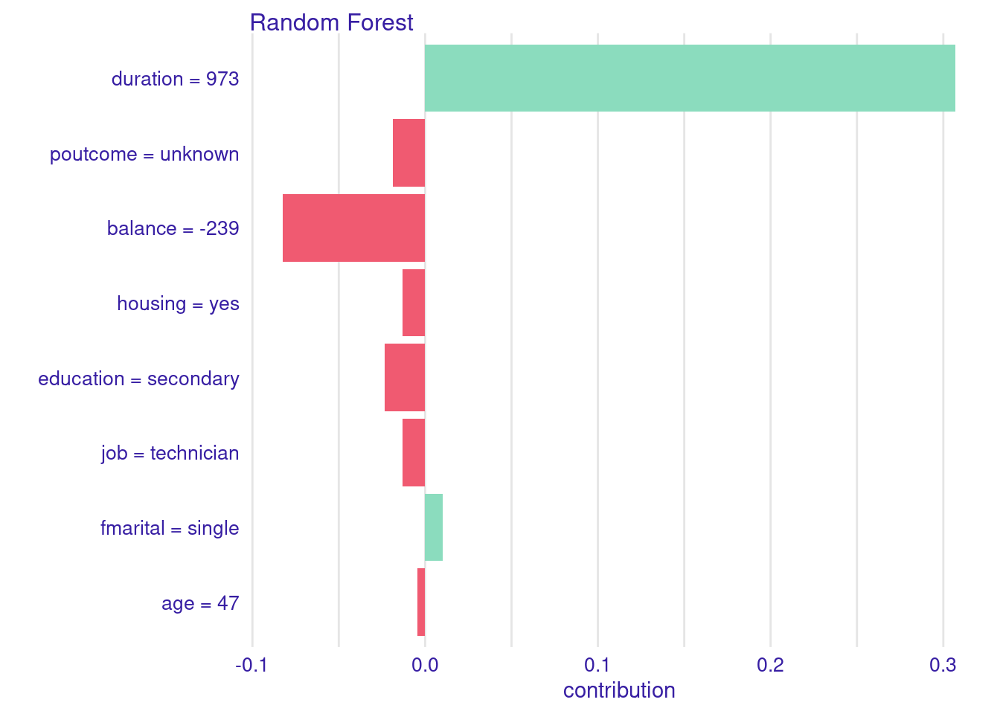
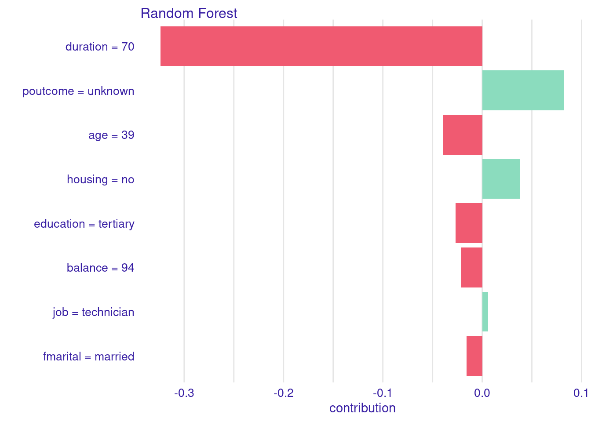

La ética en ML es un tema crucial en la actualidad, ya que el uso de algoritmos y modelos de aprendizaje automático está cada vez más presente, a veces sin darnos cuenta, en nuestra vida cotidiana. La toma de decisiones automatizada basada en datos plantea desafíos éticos y sociales que deben ser abordados de manera responsable.
Ética
Disciplina filosófica que estudia el bien y el mal y sus relaciones con la moral y el comportamiento humano.
Conjunto de costumbres y normas que dirigen o valoran el comportamiento humano en una comunidad.
La ética en ML se centra en garantizar que los sistemas de AI tomen decisiones justas, imparciales y éticas. Esto implica considerar la equidad en el tratamiento de diferentes grupos de personas, la transparencia en cómo se toman las decisiones y la privacidad de los datos utilizados en el entrenamiento de modelos.
Uno de los desafíos clave en la ética del ML es la discriminación algorítmica. Los modelos de ML pueden aprender sesgos presentes en los datos de entrenamiento, lo que resulta en decisiones discriminatorias en áreas como la selección de candidatos, la concesión de créditos o la aplicación de la ley. Una de las vías de trabajo e investigación en ML es la de tratar de mitigar estos sesgos y garantizar una toma de decisiones más justa.
La transparencia es otra preocupación importante. Comprender por qué un modelo de ML toma ciertas decisiones es esencial, especialmente en aplicaciones críticas como la atención médica. Los investigadores están desarrollando técnicas de explicabilidad, que veremos más adelante, que permiten a los usuarios comprender el razonamiento detrás de las decisiones de los algoritmos.
La privacidad de los datos también es un aspecto fundamental de la ética en ML. La recopilación y el uso de datos personales deben realizarse de manera ética y respetando las normativas de protección de datos. Garantizar la seguridad de los datos es esencial para prevenir brechas de privacidad.
9.2 Aprendizaje Automático Explicable
Los modelos computacionales han alcanzado niveles muy elevados de precisión y capacidad en la toma de decisiones. Sin embargo, a medida que estos modelos se vuelven más complejos, su falta de transparencia se ha convertido en un desafío crítico y probablemente, en uno de sus puntos débiles más críticos para su implantación en la sociedad. La necesidad de comprender cómo y por qué un modelo de ML toma ciertas decisiones se ha vuelto fundamental, especialmente en aplicaciones críticas, como el diagnóstico médico y la detección de fraudes financieros.
El aprendizaje máquina explicable (XML, “Explainable Machine Learning” en inglés) se refiere a la capacidad de los modelos de ML para proporcionar explicaciones claras y comprensibles de sus decisiones. Esto implica no solo producir resultados precisos, sino también presentar una justificación o una razón para cada predicción o clasificación realizada. La transparencia es esencial porque permite a los usuarios, ya sean médicos, reguladores o consumidores, confiar en las decisiones del modelo y tomar decisiones informadas en consecuencia.
Las técnicas de XML incluyen: La interpretabilidad y explicabilidad en el aprendizaje automático abarcan una variedad de modelos y métodos que permiten comprender cómo funcionan los modelos de machine learning y por qué toman ciertas decisiones. A continuación, proporcionamos una taxonomía de estos modelos y métodos:
Métodos basados en reglas
Reglas de decisión: Estos modelos generan reglas lógicas que explican el razonamiento detrás de las predicciones del modelo.
Árboles de decisión: Los árboles muestran la secuencia de decisiones tomadas por el modelo en cada nodo, lo que facilita la interpretación.
Métodos basados en características
Importancia de características: Calcula la importancia de cada característica en el modelo, lo que permite identificar las variables más influyentes en las predicciones.
Análisis de efectos parciales: Evalúa el impacto de una sola característica en las predicciones, manteniendo las demás constantes.
Métodos basados en ejemplos
Prototipos: Encuentra ejemplos representativos o prototipos de datos que explican cómo el modelo toma decisiones.
Casos de prueba: Genera instancias que muestran cómo el modelo reacciona a diferentes escenarios.
Métodos de aproximación
Modelos locales interpretables: Crea modelos más simples (lineales, regresiones, etc.) en regiones locales del espacio de características para comprender decisiones en áreas específicas.
Regresiones lineales localmente ponderadas (LWLR): Asigna pesos a las instancias cercanas para ajustar una regresión lineal local.
Métodos basados en atención
Atención y atención saliente: Modelos basados en atención destacan características o regiones de interés que influyen en las predicciones.
Redes neuronales con atención: Las redes neuronales con mecanismos de atención permiten entender qué partes de la entrada son relevantes para la salida.
Métodos basados en métricas
Métricas de proximidad: Evalúan la similitud entre entradas y cómo se relacionan con las predicciones.
SHAP (SHapley Additive exPlanations): Utiliza conceptos de teoría de juegos para asignar valores de importancia a las características.
Métodos basados en resumen
Reglas de decisión generadas por el modelo: El modelo crea reglas que resumen su comportamiento.
Análisis de componentes: Reduce la dimensión de los datos para visualizar y resumir características significativas.
Métodos de muestreo y generación de datos
Perturbación de datos: Se modifican las características de entrada para entender cómo afectan a las predicciones.
Muestreo de datos contrapuestos: Se generan ejemplos que muestran cómo las predicciones cambiarían si los datos fueran diferentes.
Métodos de comparación
Modelos interpretables frente a modelos de caja negra: Compara modelos interpretables con modelos complejos en términos de rendimiento y capacidad de explicación.
Herramientas de visualización
Gráficos interactivos: Visualizaciones que muestran cómo las características afectan a las predicciones.
Heatmaps y perfiles de importancia: Muestran la importancia de las características en un formato visual.
Usemos, a modo de ejemplo, alguna de estas técnicas en un ejemplo práctico. Buscamos una interpretación del modelo mediante la técnica SHAP. El objetivo de SHAP es proporcionar explicaciones claras y coherentes para las predicciones del modelo de ML, un modelo de Random Forest en el ejemplo. La técnica se basa en el principio de que cada característica o atributo de entrada de un modelo contribuye de alguna manera a la predicción final. SHAP cuantifica esta contribución para cada característica, permitiendo una interpretación más profunda de cómo el modelo llega a sus conclusiones.
Preparation of a new explainer is initiated
-> model label : Random Forest
-> data : 5581 rows 8 cols
-> data : tibble converted into a data.frame
-> target variable : 5581 values
-> predict function : yhat.randomForest will be used ( default )
-> predicted values : No value for predict function target column. ( default )
-> model_info : package randomForest , ver. 4.7.1 , task classification ( default )
-> model_info : Model info detected classification task but 'y' is a matrix . Converted to numeric. ( NOTE )
-> predicted values : numerical, min = 0 , mean = 0.4759208 , max = 1
-> residual function : difference between y and yhat ( default )
-> residuals : numerical, min = -0.65 , mean = 0.003025623 , max = 0.764
A new explainer has been created!
predict(explain.rf, new.test)
[1] 0.638
shap.new <-predict_parts(explainer = explain.rf, new_observation = new.test, type ="shap",B =25)plot(shap.new,show_boxplots=FALSE)

La predicción para la nueva observación es yes (\(probabilidad > 0.5\)). En el gráfico podemos observar los llamados valores Shapley, y encontramos los motivos para dicha predicción. Vemos como las dos variables que están asociadas con esa predicción positiva son la larga duración de la llamada y su estado civil (single). El resto de valores de las variables para ese individuo estarían indicando que la respuesta (predicha) es no.
Si repetimos el experimento para el segundo de los datos en test podemos observar que la corta duración de la llamada, el no saber qué resultado tuvo la campaña de marketing anterior y el no tener casa en propiedad, son las variables más asociadas a la predicción no para el valor de la variable respuesta.
new.test <- df.test[2,-9]new.test
# A tibble: 1 × 8
age job housing fmarital education duration poutcome balance
<int> <chr> <chr> <fct> <chr> <int> <chr> <int>
1 39 technician no married tertiary 70 unknown 94
predict(explain.rf, new.test)
[1] 0.176
shap.new <-predict_parts(explainer = explain.rf, new_observation = new.test, type ="shap",B =25)plot(shap.new,show_boxplots=FALSE)

Puedes encontrar una taxonomía completa aquí: (Schwalbe y Finzel 2023) y aquí (Molnar 2020). Es importante recordar que la elección de un método o modelo de interpretabilidad depende del contexto y los objetivos del análisis. La interpretabilidad y explicabilidad son esenciales para comprender y confiar en los modelos de ML, especialmente en aplicaciones críticas donde las decisiones tienen un alto impacto.
Además, la regulación y las directrices éticas están comenzando a exigir la explicabilidad en ciertas aplicaciones críticas para garantizar la rendición de cuentas y la equidad.
El XML no solo mejora la confianza en los modelos de ML, sino que también permite una colaboración más efectiva entre humanos y máquinas. Al comprender las razones detrás de las decisiones del modelo, los expertos pueden realizar ajustes cuando sea necesario y mejorar aún más la precisión y la utilidad de la IA en una variedad de campos.
9.2.1 Contrafácticos
En el contexto de la AI y la explicabilidad de modelos de ML, los contrafácticos (o contrafactuales) son una técnica utilizada para evaluar y comprender cómo los modelos toman decisiones al considerar escenarios hipotéticos o situaciones alternativas. Los contrafácticos son preguntas o declaraciones que plantean “¿Qué habría ocurrido si…?” con el propósito de analizar cómo un modelo habría respondido si las condiciones o las entradas hubieran sido diferentes. Esta técnica se utiliza para obtener información sobre cómo un modelo realiza sus predicciones y para explicar su razonamiento. Además, los contrafácticos contribuyen a garantizar la transparencia y la equidad en las aplicaciones de AI.
Algunas características clave de los contrafácticos son:
Evaluación de modelos: Los contrafácticos permiten evaluar la coherencia y el comportamiento de un modelo de ML. Al plantear preguntas hipotéticas, se puede determinar si el modelo da respuestas razonables y lógicas en diferentes situaciones.
Comprensión de decisiones: Los contrafácticos ayudan a comprender por qué un modelo toma decisiones específicas. Al explorar cómo habría respondido el modelo en diferentes circunstancias, se puede inferir qué factores influyen en sus predicciones.
Validación de decisiones: Los contrafácticos se utilizan para validar o justificar las decisiones de un modelo. Al proporcionar explicaciones sobre cómo habría actuado en situaciones hipotéticas, se puede respaldar la idoneidad de las decisiones tomadas.
Sensibilidad a entradas: Los contrafácticos también ayudan a determinar la sensibilidad de un modelo a diferentes entradas. Pueden revelar si el modelo realiza predicciones consistentes cuando las variables de entrada cambian.
Detección de sesgos y fallos: Al plantear contrafácticos, es posible identificar sesgos o problemas en el modelo. Si las respuestas del modelo en situaciones hipotéticas parecen sesgadas o incoherentes, esto puede señalar áreas problemáticas que requieren atención.
Por ejemplo, en un sistema de crédito que utiliza un modelo de ML para tomar decisiones de aprobación, se podría plantear la pregunta contrafáctica: “¿Habría aprobado el crédito si el ingreso del solicitante fuera un 10% más alto?” Esto permite evaluar si el modelo es sensible a los cambios en los ingresos y si realiza decisiones justas y coherentes.
Si quieres aprender un poquito más sobre contrafácticos, prueba esta lectura (Fernández et al. 2020).
9.3 Deriva conceptual
En el mundo del ML, la deriva conceptual es un fenómeno crítico que se refiere a la evolución de los datos y la cambiante naturaleza de las relaciones entre las variables a lo largo del tiempo. A medida que se acumulan nuevos datos, los patrones subyacentes pueden cambiar, lo que puede afectar drásticamente la eficacia de los modelos de previamente entrenados.
Este fenómeno es particularmente relevante en aplicaciones en las que los datos son dinámicos y cambian con el tiempo, como el monitoreo de sistemas en tiempo real, el análisis de tendencias de mercado o la detección de anomalías en redes informáticas. En tales casos, los modelos de ML que se entrenan inicialmente en un conjunto de datos pueden volverse obsoletos o ineficaces a medida que las condiciones cambian y las relaciones entre las variables evolucionan.
La deriva conceptual puede manifestarse de varias formas:
cambios en la distribución de los datos
cambios en la importancia relativa de las características
cambios en las relaciones entre variables
aparición de nuevos patrones que antes no estaban presentes.
Reconocer y abordar la deriva conceptual es esencial para mantener la precisión y la relevancia de los modelos a lo largo del tiempo.
Para abordar la deriva conceptual, es necesario implementar técnicas de adaptación de modelos que permitan a los algoritmos de ML ajustarse a los cambios en los datos. Esto puede implicar:
reentrenamiento periódico de los modelos
monitorización constante de la calidad del modelo
identificación de los momentos en que se produce una deriva conceptual significativa.
La capacidad de adaptarse a esta deriva es esencial para garantizar que los modelos sigan siendo efectivos en entornos dinámicos y cambiantes.
La deriva conceptual es un desafío continuo en ML y destaca la importancia de mantener los modelos actualizados y capaces de adaptarse a entornos de datos en constante evolución.
Tener un equipo de científicos de datos dedicados para la monitorización de modelos en producción es esencial para garantizar que los modelos sigan siendo eficaces, justos, cumplidores y útiles a lo largo del tiempo. Además, este equipo puede proporcionar una capa adicional de seguridad y confiabilidad en el uso de la AI y el ML en aplicaciones del mundo real.
Rendimiento continuo
Los modelos de ML no son estáticos; tal y como se ha indicado, su rendimiento puede degradarse con el tiempo debido a cambios en los datos de entrada o en el entorno. Un equipo de científicos de datos puede monitorear de cerca el rendimiento del modelo y tomar medidas para mantener su eficacia.
Detección de deriva de datos
Hemos visto que la deriva de datos es un fenómeno en el que las características de los datos de entrada cambian con el tiempo. Esto puede llevar a predicciones inexactas y, en algunos casos, a resultados desastrosos. Los científicos de datos pueden identificar la deriva de datos y ajustar o reentrenar el modelo en consecuencia.
Gestión de sesgo y equidad
La equidad y la falta de sesgo son consideraciones críticas al implementar modelos en producción, especialmente en áreas como la toma de decisiones y la selección de personal. Un equipo de científicos de datos puede evaluar y abordar problemas de sesgo y equidad de manera proactiva.
Actualización de modelos
Con el tiempo, es probable que se desee mejorar los modelos existentes o desarrollar nuevos. Los científicos de datos pueden dirigir el proceso de actualización y garantizar que los modelos reflejen las necesidades cambiantes del negocio.
Supervisión de errores y problemas técnicos
Los errores pueden ocurrir, y es fundamental identificarlos y corregirlos rápidamente. Los científicos de datos pueden implementar sistemas de monitorización de errores y procesos de solución de problemas.
Cumplimiento normativo
En sectores regulados, como la atención médica o las finanzas, se requiere un cumplimiento estricto con regulaciones específicas. Un equipo de científicos de datos puede garantizar que los modelos cumplan con las normativas vigentes.
Comunicación con partes interesadas
Los resultados de los modelos deben comunicarse de manera efectiva a partes interesadas que pueden no estar familiarizadas con la ciencia de datos. Los científicos de datos pueden actuar como intermediarios y explicar los resultados de manera comprensible.
Optimización de recursos
Los recursos computacionales y el tiempo de los científicos de datos son valiosos. Un equipo de científicos de datos puede optimizar la asignación de recursos, enfocándose en los aspectos más críticos de la monitorización y ajuste de modelos.
Puedes aprender sobre la deriva conceptual aquí: (Lu et al. 2018).
Fernández, Rubén R, Isaac Martı́n De Diego, Vı́ctor Aceña, Alberto Fernández-Isabel, y Javier M Moguerza. 2020. «Random forest explainability using counterfactual sets». Information Fusion 63: 196-207.
Lu, Jie, Anjin Liu, Fan Dong, Feng Gu, Joao Gama, y Guangquan Zhang. 2018. «Learning under concept drift: A review». IEEE transactions on knowledge and data engineering 31 (12): 2346-63.
Schwalbe, Gesina, y Bettina Finzel. 2023. «A comprehensive taxonomy for explainable artificial intelligence: a systematic survey of surveys on methods and concepts». Data Mining and Knowledge Discovery, 1-59.